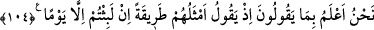
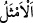
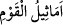

Celâleyn’de şöyle der: “Onlar gizlice birbirlerine: ‘Siz kabirlerinizde sadece on gece
kaldınız’ derler. Bu sözleriyle iki sûr arasındaki süreyi kasdederler. Aslında o süre kırk
yıldır. Bu süre içinde kâfirlerden azâb kaldırılır. Kâfirler kıyâmetin korkunç sahnelerini
açıkça görünce kendi aralarında üzerlerinden azâbın kaldırıldığı bu süreyi çok az
bulurlar.” Bu husus, İbn Abbas (r. anhümâ)’dan rivâyet edilmiştir. Bahru’l-ulûm’da ise
‘Bu görüş çok zayıftır’ denilir.
104. Aralarında konuştukları konuyu biz daha iyi biliriz. Onların en olgun ve akıllı
olanı o zaman: “Bir günden fazla kalmadınız” der.
“Aralarında konuştukları konuyu” yani ne kadar kaldıklarını “biz daha iyi biliriz.”
Biz ki onların Rabbiyiz onların ne söylediğini daha iyi biliriz. “Onların en olgun ve
akıllı olanı” en geniş görüşlü ve en akıllı olanı “o zaman: “Bir günden fazla
kalmadınız” der.”
el-Müfredât’ta der ki: “
” kelimesi, en üstün olanlara en çok benzeyen ve hayra en
yakın olanları ifâde etmek için kullanılır. “
” sözü, toplumun en hayırlılarından
kinâyedir. Bu âyetteki ifâde de bu anlamdadır.”
Bu sözün onların en olgun ve akıllı olanına nisbet edilmesi, Allah tarafından ona
hatırlatılmıştır. Fakat bu doğruya en yakın olduğu için değil, korkunun şiddetine daha iyi
delâlet etmesi sebebiyledir.
et-Te’vîlâtü’n-Necmiyyede şöyle der: “Âyet işâret etmektedir ki sûra ikinci defa
üflendiği vakit o en büyük korku gününde belâ ve cefâ ehli haşrolunduğunda işte o gün
çocukları ak saçlı ihtiyarlara çevirir (bk. el-Müzzemmil, 73/17), “o gün yer başka yer
hâline getirilir.” (İbrâhim, 14/48) O gün Rabb’imiz, daha önce hiç benzeri görülmemiş
bir gadabla gadaplanır. Ondan sonra da o günkü gibi gadaplanmayacaktır. İşte
inkârcılar, o gündeki ilâhî gadabın şiddetini gördükleri vakit, daha önce (kabirde)
kendilerine isâbet etmiş olan azâbı azımsarlar. Kabirlerindeki uzun süren bekleyişi, az
bir şey olarak görürler ve kendilerinin, kabirde ancak on gün kaldığını zannederler.
Allah Teâlâ sonra şöyle buyuruyor: “Aralarında konuştukları konuyu” uğratıldıkları
belanın büyüklüğüne dâir söylediklerini ve ne söylediklerini “biz daha iyi biliriz.
Onların en olgun ve akıllı olanı” yâni şiddetli belâya uğrama konusunda en doğru
görüşlü olanı “o zaman: “Bir günden fazla kalmadınız” der.” Çünkü o günde
karşılaştığı belânın şiddetini, daha önce gördüklerinden on katı fazla bulur.”
Şâir şöyle demiştir:
Dünya ancak bir bulut gölgesi gibidir
Bir gün seni gölgeleyen, sonra giden bir bulut.